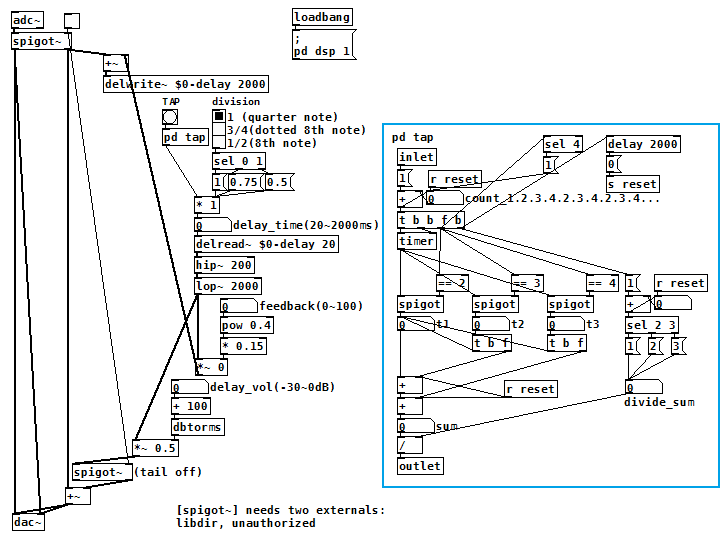

タップテンポ付ディレイ（Pure Data パッチ）
2017年09月28日 カテゴリー：Pure Data
Pure Data(Pd)でのディレイは、[delwrite~]に信号を入力し、[delread~]から指定した時間遅延後出力させるというものです。リピートさせるには、ディレイ音を再び[delwrite~]に入力します。青枠内はタップテンポ入力[pd tap]の中身です。

（このパッチをダウンロード）
とりあえず適当に[hip~][lop~]を入れてディレイ音を劣化させています。また、入力部分の[spigot~]だけでエフェクトオフにした場合、ディレイ音が消えずに出力される（いわゆる「テイル」機能）ので、出力部分にも[spigot~]を入れてエフェクトオフ時ディレイ音を出力しないようにしています。
TAPをクリックすることでタップテンポ入力ができます。リズムはdivisionのラジオボタンで4分音符、付点8分音符、8分音符を選べます。
【 [pd tap]について 】
＜使い方＞
TAPのbangを2回以上クリックすると、そのクリック間隔時間の平均がディレイタイムとして設定されます。5回以上クリックすると、最新4回クリック分の間隔時間のみ反映されます。前回のクリックから2秒間クリックしなかった場合、自動的にテンポ入力終了となります。
＜解説＞
[delay]はbangが入ってから遅延時間内にまたbangが入ってくると、待機していたbang出力がキャンセルされる仕様になっています。TAPクリック毎に右上の[delay 2000]にbangが入りますが、2秒間bangが途切れたときのみリセット信号[s reset]が発生するということになります。
1回目のTAPクリック時、[timer]から出力される数値は全ての[spigot]でせき止められているので何も変化はありません。2回目のクリック時は左側の[spigot]を通過してt1にクリック間隔時間が入り、同様に3回目クリック時はt2、4回目クリック時はt3に時間が入ります。4回目クリック後上側のカウンターが1に戻り、5回目クリック以降は繰り返しになります。そしてt1～t3を足し合わせた数を3で割り、平均値を算出します。
右側のカウンターは2回目と3回目クリック時の計算のためのものです。2回クリック時はt1を1で割り、3回クリック時はt1+t2を2で割るようになっています。